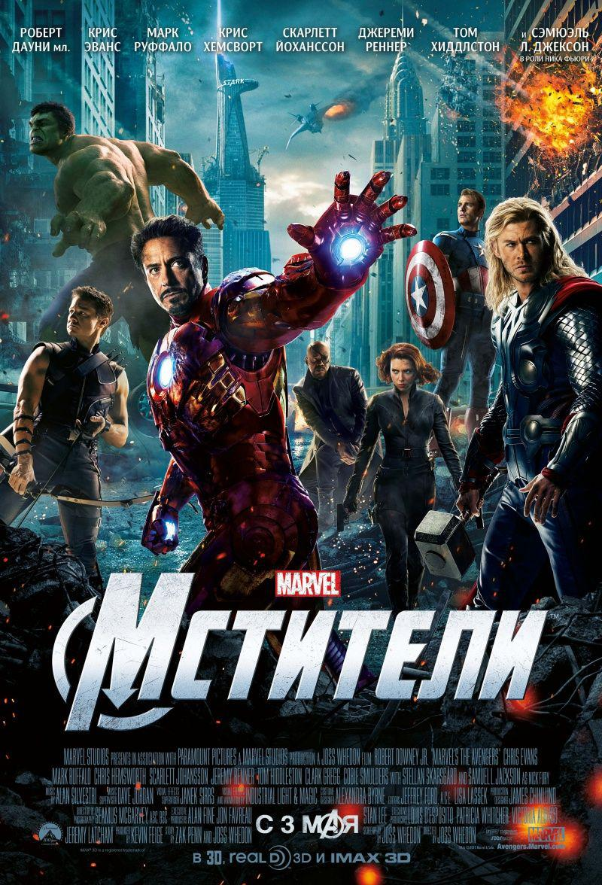

Асгардский бог Локи заключает сделку с повелителем инопланетной расы, известной как Читаури[комм 3]: в обмен на Тессеракт — неиссякаемый источник космической энергии, имеющий кубическую форму, читаури предоставят Локи армию для захвата Земли. Ник Фьюри, директор агентства Щ. И. Т., прибывает на научную базу (англ.)русск., где астрофизик Эрик Селвиг занимается исследованием Тессеракта. Селвиг и агент Мария Хилл сообщают Фьюри, что куб нестабилен и возможен выброс энергии. Объект активизируется, открывая портал, предоставляющий Локи путь на Землю. Он забирает Тессеракт и при помощи своего скипетра получает контроль над Селвигом и несколькими агентами Щ.И.Т., среди которых Клинт Бартон, более известный как Соколиный глаз. С их помощью Локи уходит, а портал саморазрушается, уничтожая базу.
Фьюри решает возродить отменённую ранее программу «Инициатива Мстителей». Агент Щ.И.Т. Наташа Романофф, более известная как Чёрная вдова, отправляется в Индию, где находит специалиста по гамма-излучению доктора Брюса Бэннера. Хотя тот понимает, что Щ.И.Т. хочет использовать его альтер-эго Халка в своих целях, он соглашается на предложение. Агент Фил Колсон навещает Железного человека Тони Старка и его помощницу и возлюбленную Пеппер Поттс, уговаривая Старка завершить исследования Селвига. Сам Фьюри посещает Стива Роджерса, который был первым американским супергероем — Капитаном Америкой — и со времён Второй мировой войны был заморожен на 70 лет. Герои прибывают на геликарриер — летающий авианосец Щ.И.Т.
Локи засекают в Штутгарте. Пока Соколиный глаз похищает для него иридий, необходимый для стабилизации куба, Локи заставляет гражданское население присягнуть ему на верность, но Капитану Америке и Железному человеку удаётся взять его в плен. Во время транспортировки на них нападает Тор — сводный брат Локи и бог грома. Он пытается убедить брата вернуть Тессеракт и после недолгой стычки с Капитаном Америкой и Железным человеком понимает, что они преследуют те же цели, и присоединяется к команде. Локи доставляют на Геликарриер и помещают в предназначенную для удержания Халка камеру, пока куб не будет найден. Работая вместе с Бэннером, Старк взламывает компьютеры Щ.И.Т. и обнаруживает разработки по использованию куба в производстве оружия на случай возможного вторжения. Роджерс находит вооружение, работающее на энергии куба, которое раньше использовала нацистская организация Г.И.Д.Р.А.. Старк и Роджерс обвиняют Фьюри во лжи, герои начинают ссориться, что чуть было не приводит к открытому конфликту. Чёрная вдова, якобы пытаясь выторговать у Локи свободу Бартона, узнаёт, что он намеренно сдался команде, и что его настоящий план — спровоцировать новое появление Халка. Тем временем солдаты Локи во главе с Соколиным глазом нападают на авианосец, обнаружив его благодаря скипетру. Соколиный глаз повреждает один из двигателей, который позднее с трудом запускают Капитан Америка и Железный человек. Из-за аварии в Бэннере просыпается Халк, которого пытается сдержать Тор, в результате чего Халк падает с корабля. Во время борьбы с Соколиным глазом Чёрной вдове удаётся ударом по голове снять с него контроль Локи.
Локи удаётся выбраться из камеры, заперев в ней Тора. Он смертельно ранит напавшего на него агента Колсона, сбрасывает камеру с Тором с авианосца и сбегает. При помощи своего волшебного молота Мьёльнира Тор выбирается из ловушки. Фьюри использует смерть Колсона, чтобы мотивировать героев работать в одной команде. Старк и Роджерс понимают, что Локи нужно не просто победить их, а доказать своё превосходство перед человечеством, и догадываются, что он использует дуговой ядерный реактор Старк Тауэр в Нью-Йорке, чтобы с помощью Тессеракта открыть портал для читаури и начать завоевание Земли.
Мстители отправляются в Нью-Йорк, но не успевают помешать открытию портала, и начинается вторжение читаури. Капитан Америка, взявший на себя обязанности полевого командира отряда, приказывает эвакуировать людей и вместе с остальными героями продолжает сражение. Позднее появляется Бэннер и, превратившись в Халка, помогает уничтожить корабли инопланетян, затем добир
ается до Локи и легко побеждает его. На крыше Старк Тауэр Чёрной вдове и освободившемуся от внушения Локи профессору Селвигу удаётся взять портал под контроль при помощи скипетра Локи. Между тем Комитет управления — начальство Фьюри — собирается уничтожить Манхэттен ядерными ракетами, чтобы остановить вторжение, однако Фьюри не согласен с этим. Тем не менее комитету всё же удаётся отдать приказ об уничтожении двум истребителям. Фьюри сбивает один из них, но второй успевает выпустить ракету. Незадолго до запуска Фьюри сообщает об угрозе Железному человеку, который решает перенаправить снаряд прямо в портал к читаури. Ему это удаётся, и ракета уничтожает главный корабль врагов, после чего отключаются и все прорвавшиеся на Землю захватчики. Но и у оказавшегося по ту сторону портала Старка тоже выходит из строя костюм. Он теряет сознание и падает на Землю через портал, в то время как Чёрная вдова его закрывает. Падающего Старка готовится поймать Тор, но Халку удаётся сделать это раньше. Герои спасли мир и получили всеобщее признание. Тор забирает Локи и Тессеракт в Асгард, а Фьюри разрешает Мстителям разойтись, считая, что, когда человечеству будет угрожать новый враг, герои снова придут на помощь.
В первой из двух сцен после титров повелитель читаури в своём мире извиняется за провал вторжения перед своим таинственным хозяином[комм 4]. Во второй сцене вся команда молча ест шаурму в том кафе, о котором ранее говорил Старк.
